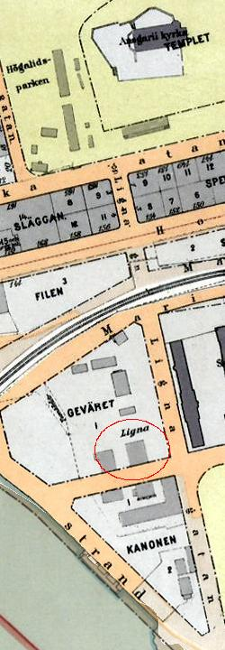
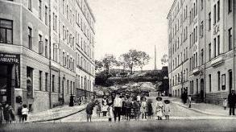
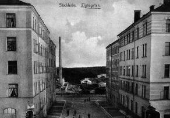

Södermalm i tid och rum
Lignagatan


Lignagatan norrut från Hornsgatan år 1900-1910

Lignagatan söderut från Brännkyrkagatan år 1906
Ligna brädgård. I bakgrunden Hornsgatan
Lignagatan



Ligna brädgård. I bakgrunden Hornsgatan